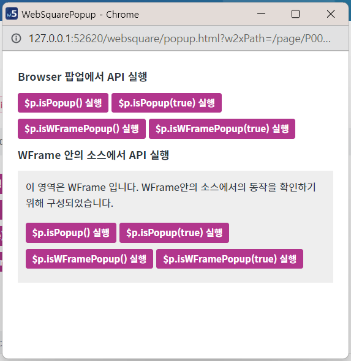
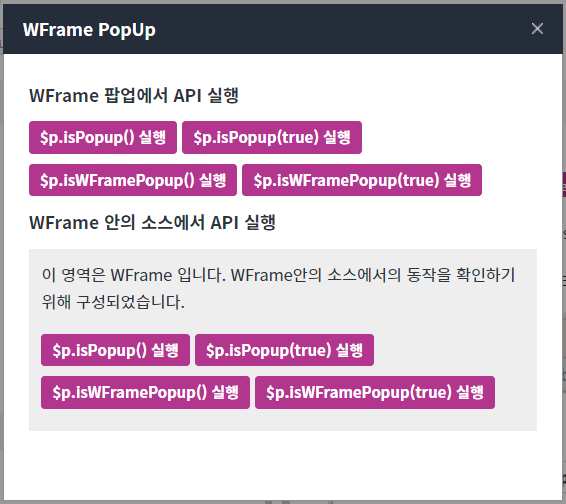
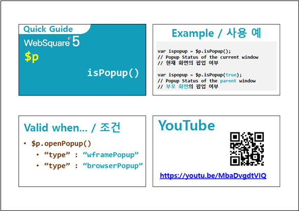
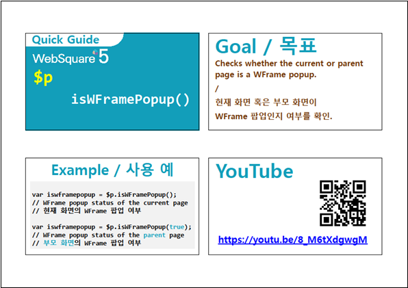

작성된 화면이 팝업인지 확인할 수 있는 API 예제입니다. 여기서 '작성된 화면'이란 API를 호출하는 스크립트가 작성된 화면을 의미합니다.
이 API는 팝업의 유형이 wframePopup 또는 browserPopup인 경우에만 지원됩니다.
팝업이 아닌 화면에서 $p.isPopup, $p.isWFramePopup 실행하기
Browser PopUp 에서 $p.isPopup, $p.isWFramePopup 실행하기
WFrame PopUp 에서 $p.isPopup, $p.isWFramePopup 실행하기
예제의 테스트 방법은 버튼을 클릭하여 결과값을 확인하는 방식으로 구성되었습니다.
1. 버튼 $p.openPopup() - browserPopup 실행 을 클릭합니다.
2. 아래의 이미지와 같이 Browser 팝업이 호출됩니다.
그림 1.[실행 예시 이미지 - Chrome 브라우저]

1. 버튼 $p.openPopup() - wframePopup 실행 을 클릭합니다.
2. 아래의 이미지와 같이 WFrame 팝업이 호출됩니다.
그림 2.[실행 예시 이미지 - Chrome 브라우저]

1. 버튼 $p.isPopup() 실행 을 클릭합니다.
API를 호출한 화면이 팝업인지 여부와 예상 실행 결과를 alert합니다.
2. 버튼 $p.isPopup(true) 실행 을 클릭합니다.
API를 호출한 화면이 팝업에 속한 화면인지 여부와 예상 실행 결과를 alert합니다.
3. 버튼 $p.isWFramePopup() 실행 을 클릭합니다.
API를 호출한 화면이 WFrame 팝업인지 여부와 예상 실행 결과를 alert합니다.
4. 버튼 $p.isWFramePopup(true) 실행 을 클릭합니다.
API를 호출한 화면이 WFrame 팝업에 속한 화면인지 여부와 예상 실행 결과를 alert합니다.
//case 1 //이 스크립트를 호출한 화면이 팝업인지의 여부를 반환합니다. var ispopup = $p.isPopup(); //case 2 //이 스크립트를 호출한 화면이 팝업에 속한 화면인지 여부를 반환합니다. var ispopup = $p.isPopup(true);
//case 1 //이 스크립트를 호출한 화면이 WFrame 팝업인지의 여부를 반환합니다. var ispopup = $p.isWFramePopup(); //case 2 //이 스크립트를 호출한 화면이 WFrame 팝업에 속한 화면인지 여부를 반환합니다. var ispopup = $p.isWFramePopup(true);
$p.isPopup( closest )
$p.isWFramePopup( closest )
[SP5 개발 가이드] 팝업 여부 확인
링크 : https://docs1.inswave.com/sp5_user_guide/ece0f66f1a241b15#26f84e39376b8ca1
분류 : 파트 IV. 컴포넌트 / 팝업 / 팝업 제어 / 팝업 여부 확인
[SP5 개발 가이드] WFrame 팝업 확인
링크 : https://docs1.inswave.com/sp5_user_guide/ece0f66f1a241b15
분류 : 파트 IV. 컴포넌트 / 팝업 / 팝업 제어 / WFrame 팝업 확인
팝업 여부 확인
링크 : https://www.youtube.com/embed/8_M6tXdgwgM

WFrame 팝업 확인
링크 : https://youtu.be/8_M6tXdgwgM
